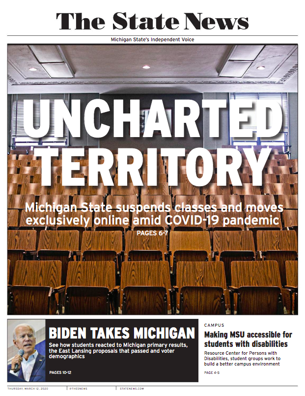

Managing Editor
Murray oversaw production of the print publication.

Mila Murray
Mila Murray is a journalism and media and information double major at Michigan State University. She has extensive experience working in student media having held multiple positions at The State News, MSU’s award-winning independent student newspaper. She’s worked in leadership, launched the organization’s podcast division and was a top reporter. Murray and many of her colleagues have been recognized for their coverage of the Larry Nassar cases in 2017 and 2018.
Executive Producer
Murray produced The State News' official podcast.
Head Reporter
Murray reported on activism and victim advocacy.